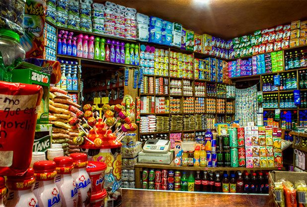
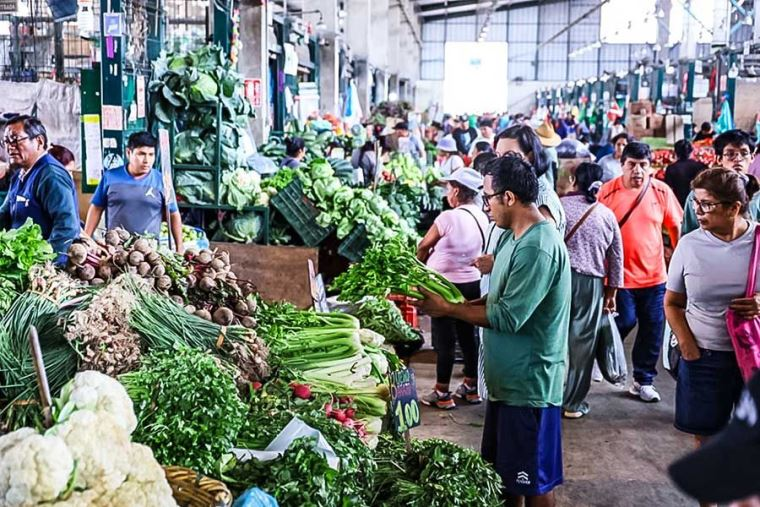
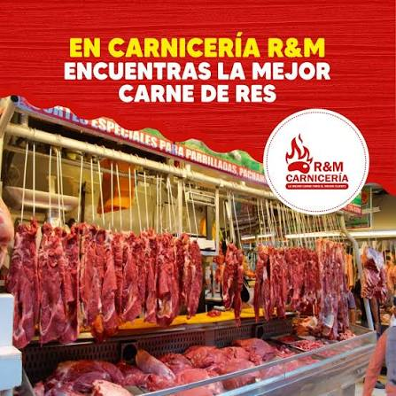
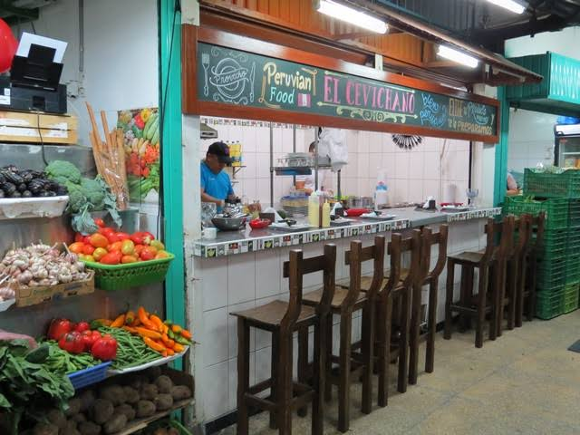
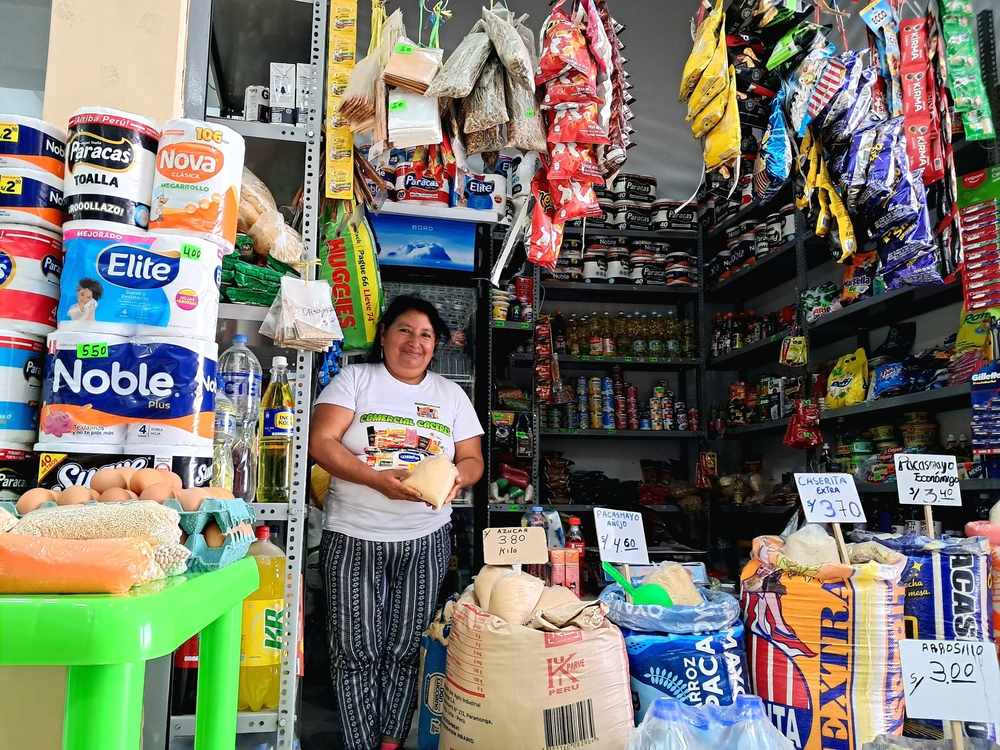
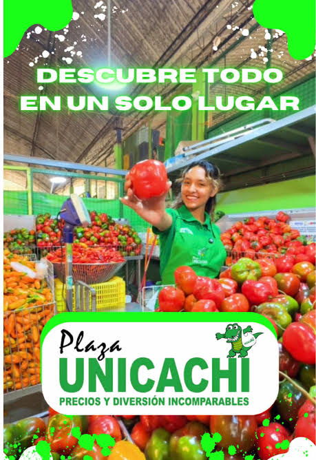
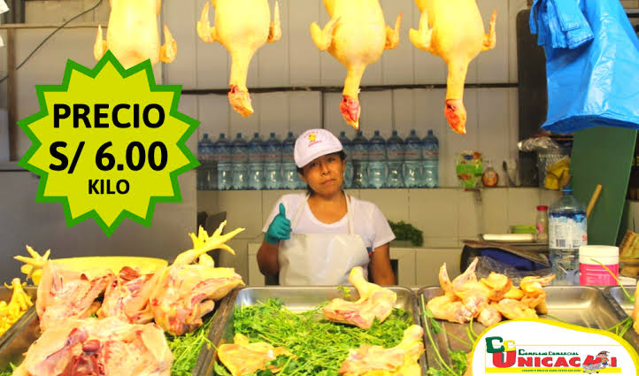

Abarrotes
Arroz, azúcar, aceite y fideos por saco o por caja para surtir tu negocio sin pagar de más.
¡Atención caserito! Los camiones mayoristas descargan desde las 5:00 a.m. ¡Venga temprano!
Tu mercado mayorista de confianza
Todo lo que buscas al por mayor y menor para tu casa o tu bodega, con los mejores precios.

Arroz, azúcar, aceite y fideos por saco o por caja para surtir tu negocio sin pagar de más.

Papa, cebolla y limón fresquecito que baja directo de los camiones cada madrugada.

Pollo del día y carnes seleccionadas para preparar el menú de toda la semana.

Desayunos contundentes y almuerzos bien servidos para recargar las pilas.
Separa tu mercadería o haz tus consultas directo con los caseros autorizados.

Pedidos al por mayor para bodegas y familias.

Venta de papa, cebolla y legumbres por mallas o kilos.

Cortes frescos de res, cerdo y pollo camal.
Mira un poco de lo que se vive en el día a día dentro del mercado.
¡Claro que sí! La gran mayoría de caseros en abarrotes, carnes y verduras ya cuentan con código QR para pagar al toque.
Sí, el mercado cuenta con playa de estacionamiento amplia y vigilada para que hagas tus compras con tranquilidad.
Si buscas precios por saco o mallas de verduras frescas de camión, lo mejor es venir entre las 4:00 a.m. y las 7:00 a.m.